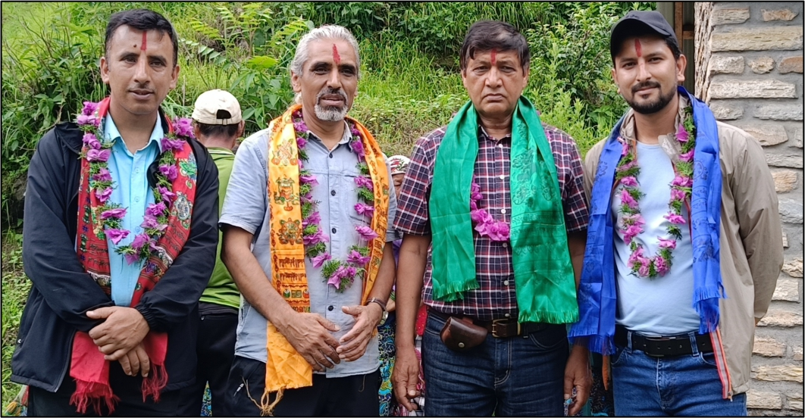
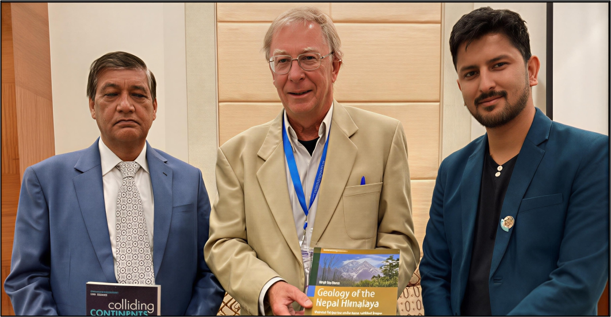

Biography
Mr. Nawaraj Parajuli has been serving as an Assistant Professor in the Department of Geology, Tribhuvan University since 2020. His academic expertise lies in structural and engineering geology, with a strong focus on geological processes related to rock deformation, terrain analysis, and applied geological investigations. He obtained his M.Sc. degree from Tribhuvan University and has been engaged in teaching and academic activities at Prithvi Narayan Campus, Tribhuvan University.
His academic and professional work is dedicated to advancing geoscience education through field-based learning, research-oriented teaching, and the development of applied geological understanding among students.
- Name: Nawaraj Parajuli
- site: www.tu.edu.np
- Phone: +9779841631110
- City: Pokhara, Nepal
- Job: Assistant Professor / Geologist
- Degree: Master
- Email: nawaraj.parajuli@prnc.tu.edu.np
- Field: Geology
Projects Projects are mainly related to geology fieldworks and mapping works
Years of experience Geological Mappings, Mineral Exploration and Teaching
International Colaboration Landslide Mapping and Field Lecturer for International students during geological field work along Kaligandaki River
My Resume
Education:
M.Sc. in Geology
Central Department of Geology, Tribhuvan University, Kathmandu, Nepal
M.Sc. Thesis on "Stratigraphy and Structure of Tectonic Window and Adjoining Area in Panchthar and Taplejung Districts of Eastern Nepal."
Teaching Experience:
Assistant Professor
Bachelor in Science, Department of Geology, Prithvi Narayan Campus 2020 - Present
- Teaching Responsibilities: Delivering instruction in various geology courses, including Structural Geology, Petrology, Stratigraphy, Geology of Nepal Himalaya, and Climate Change.
- Laboratory and Fieldwork: Directing and supervising lab studies and fieldwork projects on an annual basis, providing students with practical hands-on experience in geological research and field exploration.
- 15 days field work for B.Sc. Geology 3rd year students in Malekhu section of Dadhing district of Nepal in each year.
- 28 days field work for B.Sc. Geology 4th year along Siddhartha Highway of Nepal in each year covering geological mapping, enigneering geology, mining geology and hydrogeology.
Field Lecturer
Summer Program, SIT Study Abroad: GeoScience in Himalayas, 2022-2023
- Geo-hazard in Pokhara Valley
- Geological mapping along Kaligandaki River, western Nepal
Professional Experience:
Engineering Geologist
Sanima Hydro and Engineering Pvt. Ltd, 2019 - 2020
- Consult with the Contractor's Engineers on various engineering geological activities
- Conduct Geological Mapping and Rock Class Classification to assess site conditions
- Played a pivotal role in the design of Slope Stabilization measures.
- Responsible for meticulously reviewing and signing bills for the Mathillo Mailung Khola Jalvidhyut Aayojana (14.3 MW) project, ensuring accurate financial documentation and adherence to project budgetary requirements.
- Contribute to the Tunnel and Slope Support Design for the Mathillo Mailung Khola Jalvidhyut Aayojana (14.3 MW) project located in Rasuwa, Nepal.
Geologist
PEES Consultant (P) Ltd., 2017 - 2018
- Geological Mapping and Mineral Exploration in Parts of Taplejung and Panchthar District.
Geologist
IRDS and TAEC Consult P. Ltd., 2018-2019
- Geological Mapping for Mineral Exploration in Parts of Rukum, Rolpa, Jarjarkot, and Salyam Districts of Nepal
International Collaboration:
Research Associate
Sajag Nepal Project, 2022- 2024
- Landslide investigation in different parts of Nepal and early warning system development for landslide.
Research Associate
Landslide EVO Project, 2018-2019
- Detail Landslide Investigation in Bajura and Baitadai, Far Western Nepal.
Teaching Experience
Teaching geology imparts expertise in Earth's processes and materials, fostering analytical skills crucial for careers in geoscience. It combines fieldwork, lab work, and critical thinking to prepare professionals for understanding and managing Earth's dynamic systems.
Structural Geology Theory and Practical (GEO.101 & GEO.102)
In this educational journey, we comprehensively explore structural geology, covering fundamentals, geological maps, cross-section analysis, stereographic projection, stress and strain mechanics, unconformity identification, and field geology. This holistic approach equips students with theoretical knowledge and practical skills, shaping them into adept geologists.
Petrology Theory and Lab (GEO.201 & GEO.202)
In Petrology Geology, we explore Earth's rocks comprehensively, covering igneous, sedimentary, and metamorphic types. Through hands-on labs and advanced microscopy, students master rock identification and analysis, revealing mineral compositions and textures. These skills empower future petrologists to decode Earth's geological history with precision, one rock at a time.
Stratigraphy and Geology of Nepal and Lab (GEO 301 & GEO.302a)
This course helps students gain practical skills in rock analysis and stratigraphy while building a strong understanding of Nepal’s geological evolution and improving their ability to interpret Earth’s history in real-world settings.
Exploration Geology and Mining Geology Theory and Lab (GEO.401 & GEO.402), Engineering Geology Theory and Lab (GEO.403 and GEO.404)
Both courses combine theory, labs, and fieldwork to prepare students for roles in resource management and ensuring infrastructure safety, equipping them with the skills needed for diverse geological settings.
Publication and Conference
Publications and participation in national and international conferences.
-
Publications
- Karki K., Sapkota G.R., Kandel P.U., Baral R.R., Parajuli N., Acharya K.K., Dhital M.R. Geological Mapping with Emphasis on Sedimentary Structures Around Rukumkot and Naigad Area in Rukum (East), Western Nepal. Journal of Development Innovations, 9(2), 1–21 (2025).
- Dhital M.R., Parajuli N. A Thick Quartzite Succession in the Lesser Himalaya of Pokhara–Baglung Area: Implications for the Stratigraphy of Kuncha Formation (2025). Conference Paper. 11th Nepal Geological Congress (NGC–XI), Kathmandu, Nepal.
- Khatiwada D., Parajuli N. (2025). Hazards within the Quaternary Sediments along the Seti Nadi: A Case Study from Suklagandaki, Tanahu, Nepal. Journal of Development Innovations, 9(1), 6–21.
- Parajuli N., Khatiwada D. (2025). Geotourism along the Annapurna Mountain Range. Geotourism/Geoturystyka, 21, 83–93. https://doi.org/10.7494/geotour.2024.3-4(78-79).831
- Parajuli N., Dhital M.R., Khatiwada D. Stress, Strain and Deformation in Brittle and Ductile Rocks of the Taplejung Tectonic Window, Eastern Nepal (2025). Preprint.
- Sapkota G.R., Dhital M.R., Acharya K.K., Karki K., Baral R.R., Kandel P.U., Parajuli N. (2024). Lithostratigraphy and Structure of the Musikot–Khalanga Area, Western Nepal Himalaya. Journal of Development Innovations, 8(2), 41–65.
- Duwadi S., Adhikari D.P., Dhital M.R., Parajuli N. (2024). Assessment of the 2021 debris flow and flood related loss and damage in Melamchi Watershed of Central Nepal. Journal of Nepal Hydrogeological Association, 1(1), 107–134. https://doi.org/10.3126/jnha.v1i1.78226
- Conference Presentations
- Presented a paper at the 11th Nepal Geological Congress (NGC–XI) on “Geosciences for Climate Change Adaptation, Natural Resources, and Geo-hazard Management”, held at Everest Hotel, Kathmandu, Nepal.
- “A Thick Quartzite Succession in the Lesser Himalaya of the Pokhara–Baglung Area: Implications for the Stratigraphy of the Kuncha Formation.”
- Virtually participated in the International Conference of the American Geophysical Union (AGU) presenting “Tectonic Imprints on Rocks of the Taplejung Tectonic Window of Eastern Nepal.” Held in Washington, D.C., USA (Dec 9–13, 2024).
- Presented “Geotourism along the Annapurna Mountain Range” at the 2nd International Conference on Sustainable Mountain Development and Tourism and the International River Congress, Pokhara, Nepal.
- Presented “Engineering Geological Controls on Geo-disasters in Parts of Pokhara Valley” at the RTSTI-2023 Conference, Pokhara, Nepal (May 25–26, 2023).
- Participated in the 35th Himalayan–Karakoram–Tibet (HKT) Workshop (Nov 2–4, 2022).
- Participated in the 9th Nepal Geological Congress (NGC-IX) (Nov 19–21, 2018).
Nepal Himalaya Geological Field Work

B.Sc. Geology first and second-year students conducting a one-day geological fieldwork excursion in the Annapurna Mountain Range, gaining practical exposure to fundamental field geology concepts and observing the region’s diverse geological features in a natural setting
Introduction to Topography and Attitude of Beds | Year 2021


Amidst the whispers of the natural world, third-year B.Sc. geology students immerse themselves in the art of scientific storytelling, weaving their experiences and insights into the intricate tapestry of a geological field report, capturing the essence of their journey through the Earth's ancient narrative
Desk work


Geological Field Work Areas
Districts where geological investigations, teaching fieldwork, mineral exploration, and research have been conducted.
Gallery
Fieldwork, academic events, and geological experiences captured in images.




Refernce
Available upon request.
Contact Me
Nawaraj Parajuli
Assistant Professor, Department of Geology, Prithvi Narayan Campus, IoST, Tribhuvan University, Nepal